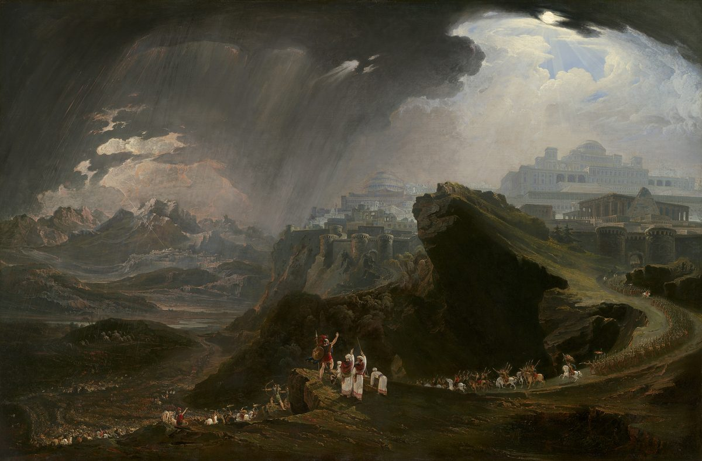

Joshua 10 — The Mister Translation

The painting shows v11 and v12 at once: the storm of great stones from the heavens is still falling on the left while light breaks through the clouds on the right, and Joshua, a speck of armour on a ledge in the foreground, raises his arm between them. Martin makes the scale the subject. The armies fill the valleys and the road, and the man whose voice Jehovah listened to (v14) is almost too small to find. Gibeon is a great city, like one of the royal cities (v2), and Martin builds it as one, a hilltop of domes, colonnades and a pyramid that owes more to Regency London’s idea of the ancient world than to any Canaanite town. The canvas is nearly two and a half metres wide; the National Gallery of Art in Washington has released the image into the public domain.
{kind=link}
‘Sun, be still at Gibeon,
and moon, in the valley of Aijalon.’note
«Sol, estate quieto en Gabaón,
y luna, en el valle de Ajalón».
and the moon stood,
until the nation took vengeance on its enemies.
Is it not written in the Book of Jashar? And the sun stood in the middle of the heavens, and did not hurry to set, for about a whole day.note
y la luna se paró,
hasta que la nación se vengó de sus enemigos.
¿No está escrito en el libro de Jaser? Y el sol se paró en medio de los cielos, y no se apresuró a ponerse, por casi un día entero.
★★★ This is the first verse of the Bible to name Jerusalem. Genesis through Deuteronomy never say the word. The city’s first appearance is in the title of a king, and its king’s name is Adoni-tsedeq, ‘my lord is righteousness’. The only earlier king connected with the place wore the same word at the end of his name: Malki-tsedeq melekh Shalem, ‘Melchizedek king of Salem’, who brought Abram bread and wine (Genesis 14:18, already on these pages). A name ending in -tsedeq followed by the word ‘king’ stands in three verses of the Hebrew Bible: that one, and v1 and v3 of this chapter. That Salem is Jerusalem is the reading of Psalm 76:2, which sets Salem in parallel with Zion (not yet on these pages). If Salem is Jerusalem, two kings of the same hill are both named for righteousness: the first blesses Abram; the second marches against the people Abram’s descendants have just sworn to protect.
★★ The city’s name is written one way and read another. The consonants spell Yerushalem; the vowels the Masoretes put under them read Yerushalayim, a vowel with no letter written for it. The full spelling, with the extra yod, stands in four verses of the Hebrew Bible, one of them Jeremiah 26:18 (already on these pages); everywhere else the letter is missing and only the vowels supply it. See ketiv/qere.
★★ A war over a peace. What alarms the king is that Gibeon hishlimu, ‘made peace’, a verb built on shalom, and he repeats it in his own letter at v4: it has made peace with Joshua. The coalition is raised against a treaty, not an invasion. And at v2 the plural is abrupt: they were very afraid, though only a king has been named. The KJV and the ASV keep it, ‘that they feared greatly’; the NWT 1984 makes it the king alone, ‘he became very much afraid’, and the NIV explains it, ‘He and his people were very much alarmed at this’.
★ ‘Like one of the royal cities’ — like one, not one. The last chapter’s note on Gibeon’s elders pointed ahead to this phrase (Joshua 9, now on these pages): a city with elders and no king, as large as a royal city. It is greater than Ai, the town Israel’s spies had judged not worth the whole army (7:3).
★★ Hoham and Piram are named nowhere else in the Bible; Japhia and Debir recur, but not as these men. Japhia is also a son of David (2 Samuel 5:15) and a town on Zebulun’s border (Joshua 19:12), neither yet on these pages; Debir, the king of Eglon, carries the name of the city Joshua will take at v38. The two are different: the man rules Eglon, and the city of Debir has its own king (v39).
★★★ The Greek Joshua has a different list. In the Septuagint the king of Jerusalem is Adonibezek — the name of the king in Judges 1:5–7 (already on these pages) who was brought to Jerusalem and died there — and the other four are Elam, Phidon, Jephtha and Dabin; Eglon is Odollam, Adullam, wherever the Greek names it; and the coalition is five kings of the Jebusites, the people the Bible elsewhere places in Jerusalem, not of the Amorites. The Masoretic names are kept here, and the Douay-Rheims, following the Latin, spells them its own way: ‘Oham king of Hebron, and to Pharam king of Jerimoth’.
★ ‘Help’ runs on both sides. The verb azar comes three times. Adoni-zedek writes come up to me and help me (v4), and four kings come; Gibeon sends come up to us quickly … and help us (v6), and Joshua comes; and at v33 a sixth king, Horam of Gezer, comes to help Lachish and is struck down with all his people. The ASV keeps the verb all three times: ‘help me’, ‘help us’, ‘to help Lachish’.
★★ ‘They and all their camps’. The word is machaneh, the same word as Joshua’s camp at Gilgal in the next verse, and the NWT 1984 keeps it, ‘these and all their camps’; the KJV and ASV read ‘all their hosts’, the NIV ‘all their troops’. Keeping the word keeps the two camps in view, the five at Gibeon and Israel’s at Gilgal.
★★★ Hoshi’ah lanu, ‘save us’, is said to Yehoshua. His name is built on the same verb, yasha, to save, and Moses gave it to him: Moses called Hoshea son of Nun — Joshua (Numbers 13:16, already on these pages). The Gibeonites ask the man named for saving to save.
★★ ‘Do not let your hands fall slack from your servants.’ Al teref, ‘do not let go’, stands in three verses of the Hebrew Bible. One is Proverbs 4:13, of holding on to discipline; the other is a prayer to God, Psalm 138:8, do not let go of the works of your hands (neither yet on these pages). Gibeon speaks to Joshua the way a psalmist speaks to God, and calls itself your servants, the status it claimed four times in the last chapter (9:8, 9, 11, 24). The Hebrew has hands, plural. The KJV and ASV make it one, ‘Slack not thy hand from thy servants’, as do the NWT 1984, ‘Do not let your hand relax from your slaves’, and the Geneva, ‘Withdraw not thine hand from thy servants’; the Douay-Rheims keeps the plural and adds the reason, ‘Withdraw not thy hands from helping thy servants’; the NIV reads ‘Do not abandon your servants’.
★ ‘All the mighty men of valour’ is the phrase of Joshua 1:14, where the eastern tribes’ fighting men were told to cross ahead of their brothers. The army that goes up for Gibeon is the whole of it.
★★ The promise is the Ai formula, and a verb that will return twice. Do not be afraid … I have given them into your hand is what Jehovah said before Ai (8:1, now on these pages). Not a man of them will stand before you sounds like Joshua 1:5, No man will stand before you, but the verb is different: there yityatsev, here ya’amod. It is the verb the chapter will give the sun and the moon at v13, stood, and take away from Israel at v19, do not stand still: the enemy cannot stand, the sun does, and the army must not.
★★ ‘All night he had gone up from Gilgal.’ The Hebrew gives the surprise first and the explanation after. The march is uphill all the way, from the camp in the Jordan valley, below sea level, into the hill country around Gibeon.
★★★ Vayhummem, ‘he threw them into confusion’, is weather-language. The root hamam is what Jehovah did to the Egyptian camp at the sea (Exodus 14:24) and promised to do to every people Israel came against (Exodus 23:27, both already on these pages). This form of the verb stands in four verses of the Hebrew Bible, and the other three all bring it down from the sky: thunder over the Philistines (1 Samuel 7:10), and lightning in David’s song, told twice (2 Samuel 22:15, where it is the written form, and Psalm 18:15; none yet on these pages). Here the sky sends hail.
★★ Who struck and who pursued? After Jehovah threw them into confusion, the Hebrew goes on in the singular, and he struck them … and he pursued them … and he struck them, with no new subject. It may be Jehovah still, or Joshua. The ASV keeps the ambiguity, ‘and he slew them with a great slaughter at Gibeon’; the NWT 1984 hands it to the army, ‘and they began to slay them with a great slaughter’, and the NIV names it, ‘so Joshua and the Israelites defeated them completely at Gibeon’. This translation keeps the singular and lets Jehovah be its nearest subject, as the Hebrew does.
★ The road has two names, one for each end. At v10 it is ma’aleh Beit-Choron, the ascent of Beth-horon; at v11, the same road seen by men running down it, morad Beit-Choron, the descent. See Beth-horon.
★★ The descent is where Israel ran at Ai. Ba-morad, ‘on the descent’, stands in four verses of the Hebrew Bible, and the first is Joshua 7:5 (now on these pages), where the men of Ai struck them down on the descent. Three chapters later it is Israel’s enemies who are struck on a descent, and not by Israel.
★★★ Stones first, and only then hail. The narrator says avanim gedolot, ‘great stones’, and names them in the next clause: avnei ha-barad, ‘the stones of the hail’. That phrase stands in one verse of the Hebrew Bible, this one. The hail is the seventh plague’s weapon, barad, which in Exodus 9 fell on every man and beast that is found in the field (Exodus 9:19, already on these pages). And the verse keeps score: more died by the hailstones than those the sons of Israel killed with the sword. The KJV and the Douay-Rheims keep the order, ‘great stones from heaven’, as does the NWT 1984, ‘great stones from the heavens’; the NIV says hail at once, ‘large hailstones’, as does the revised NWT 2013, ‘great hailstones from the sky’; the Living Bible turns them into weather, ‘a great hailstorm’.
★★ The chapter has three sets of great stones. Avanim gedolot, ‘great stones’, stands in eight verses of the Hebrew Bible, and three of them are here: stones thrown from the sky at v11, stones rolled over the mouth of the kings’ cave at v18, and stones set on the same cave for good at v27. The first of the eight is Deuteronomy 27:2 (already on these pages), the great stones on which the law was to be written. This book’s stones mark what happened: the twelve from the Jordan (4:9), Achan’s heap (7:26), the king of Ai’s cairn (8:29), and now a sealed cave.
★★ ‘Then Joshua spoke’ is how the Bible introduces a song. Az yedabber: ‘then’, followed by a verb in the form usually used for what has not happened yet, telling what did. It is the construction that opens Moses’ song at the sea, Then Moses and the children of Israel sang this song (Exodus 15:1), and Israel’s song at the well, Then Israel sang this song (Numbers 21:17), both already on these pages; this book used it once before to tell a past event, for the altar on Ebal (8:30). What follows is verse, and v13 names the book it comes from.
★★ He speaks to Jehovah, and his words are to the sun. The verse says Joshua spoke to Jehovah, and then that he said in the sight of Israel, addressing the sun and the moon directly. The prayer and the command are the same sentence. Gibeon lies to the east of the valley of Aijalon; the line puts the sun over the one and the moon over the other.
★★★ Dom, ‘be still’, is a word for silence as well as stillness, and the line has been read at least four ways. The root, damam, is to be silent or to be still; Rashi, reading for the plain sense, took dom as ‘wait’, as in if they say to us, “Wait until we come to you” (1 Samuel 14:9) and be still before Jehovah (Psalm 37:7), neither yet on these pages. (1) The prose that follows reads it as the sun stopping in the sky and the day being lengthened — the reading of the Jewish and Christian traditions, and the one the next verse spells out. (2) Some modern readers take be silent as a request that the sun’s heat or light be checked, and connect it with the storm of v11. (3) John H. Walton (1994) read the line against Mesopotamian omen texts, in which the positions of the sun and moon on a given morning spell good or bad fortune, and took it as a request for a sign against the enemy. (4) Others read it as what battle poetry does, the language of a song rather than a report. Readings differ; this translation renders the word so that none of them is ruled out. ‘Be still’ can be said of something moving and of something making noise. The KJV and ASV read ‘Sun, stand thou still upon Gibeon’; the NWT 1984 ‘be motionless’; the NIV ‘Sun, stand still over Gibeon’; the Geneva ‘Sun, stay thou in Gibeon’; and the Douay-Rheims, from the Latin, ‘Move not, O sun, toward Gabaon’.
★★ The verse has been argued over in the history of astronomy. In 1615 Galileo, writing to the Grand Duchess Christina, took up this passage directly. If the heavens move as Ptolemy described them, he wrote, ‘this could never happen at all’, because in that system the sun’s own motion runs opposite to the daily turning of the sky. On Copernicus’s system, he argued, the words read in their ‘literal, open, and easy sense’, with the sun standing in the middle of the heavens ‘in the center, where it resides’ (Stillman Drake’s translation).
★★★ ‘Is it not written in the Book of Jashar?’ Sefer ha-yashar, ‘the Book of the Upright’, stands in two verses of the Hebrew Bible: this one, and 2 Samuel 1:18 (already on these pages), which introduces David’s lament for Saul and Jonathan the same way — Behold, it is written in the Book of Jashar. Both times the book is cited for a poem, and it has not survived. See sefer ha-yashar. The later books printed under the title are a medieval Hebrew retelling of biblical history and an eighteenth-century English forgery; neither is the book cited here.
★★ The Talmud offers three answers to ‘which book?’ In Avodah Zarah 25a, Rabbi Yochanan says it is Genesis, ‘the book of Abraham, Isaac, and Jacob, who were called righteous’, and finds this very day foretold in Jacob’s blessing of Ephraim, Joshua’s tribe (Numbers 13:8): his offspring will become the fullness of the nations (Genesis 48:19, already on these pages) — fulfilled, the Talmud says, when the sun stood still for Joshua. Rabbi Elazar says Deuteronomy, for its do what is right and good (6:18); Rabbi Shmuel bar Nachmani says Judges, for its everyone did what was right in his own eyes (Judges 17:6; 21:25, not yet on these pages).
★★★ The Greek Joshua does not have the question at all. In the Septuagint, v13 runs straight from the moon standing to the sun in mid-heaven, with no Book of Jashar in between; it also says that God took vengeance on their enemies, where the Hebrew says the nation did. The Masoretic text is kept here. The KJV spells the title ‘the book of Jasher’, the ASV ‘the book of Jashar’; the Douay-Rheims translates it, ‘the book of the just’; the NIV turns the question into a statement, ‘as it is written in the Book of Jashar’; and the Living Bible claims more than the text does, ‘This is described in greater detail in The Book of Jashar’.
★★ ‘Did not hurry to set, for about a whole day.’ The verb is lavo, ‘to come in’, the Hebrew for a sun going down; it returns at v27. Keyom tamim, ‘about a whole day’, uses tamim, the word for something complete. The KJV and NWT 1984 both read ‘about a whole day’; the Douay-Rheims ‘the space of one day’; the Living Bible converts it to hours, ‘almost twenty-four hours’.
★★★ The verse says what was unique about the day, and it is not its length. There was no day like that one … for Jehovah to listen to the voice of a man. The phrase stands in one verse of the Hebrew Bible. The sentence says that on this day he did what a man told the sun to do. The ASV keeps it, ‘that Jehovah hearkened unto the voice of a man’, as does the NWT 1984, ‘in that Jehovah listened to the voice of a man’. The Douay-Rheims, following the Latin, moves the uniqueness to the length: ‘There was not before nor after so long a day’.
★★ ‘For Jehovah fought for Israel’ is the promise of the Torah in the past tense: Jehovah will fight for you, and you shall keep silent (Exodus 14:14); Jehovah your God, he is the one fighting for you (Deuteronomy 3:22, both already on these pages). Nilcham le-Yisrael, ‘fought for Israel’, stands in two verses of the Hebrew Bible, both in this chapter, here and at v42. At the sea Israel was told to keep silent while Jehovah fought; here the sun is told to be still.
★★★ V15 sends the army back to Gilgal; v16 finds it still in the field. The kings are in the cave at Makkedah, Joshua is told there, and at v21 all the people returned to the camp, to Joshua at Makkedah. Then v43 repeats v15 word for word, at the end of a campaign that has gone as far south as Debir. The Septuagint has neither verse. Readings differ. (1) V15 ends the quotation from the Book of Jashar, and belongs to the poem’s account rather than to the narrative’s sequence. (2) It is a summary placed early, and what it reports happens at v43. (3) The Hebrew has doubled a closing line, and the shorter Greek text is the older. This translation keeps both verses where the Masoretic text has them. The Living Bible sets v15 in parentheses, ‘Afterwards Joshua and the Israeli army returned to Gilgal’; the NWT 1984 reads ‘After that Joshua and all Israel with him returned’; the KJV and ASV print it plain.
★★ ‘Roll great stones’ — gollu, from galal, the verb of Gilgal’s name. Today I have rolled away the reproach of Egypt from off you, and the place was called Gilgal — Rolling (Joshua 5:9, now on these pages). The army camped at Rolling seals five kings in by rolling stones.
★★★ ‘Do not stand still’, and ‘strike at their tail’. The verb of v8 and v13 comes back as an order: al ta’amodu, do not stand. And zinnavtem is the verb made from zanav, a tail. It stands in two verses of the Hebrew Bible, and the other is Amalek’s attack on Israel in the wilderness: he met you on the road and struck your tail — all who were straggling behind you (Deuteronomy 25:18, already on these pages). What Amalek did to Israel’s stragglers, Israel is now told to do to the Amorites’. The KJV and ASV read ‘smite the hindmost of them’; the NWT 1984 ‘strike them in the rear’; the NIV ‘Attack them from the rear’.
★★ ‘Until they were finished’ — and survivors. V20 says the slaughter went on ad tummam, until they were finished, and in the same breath that the survivors who survived of them reached the fortified cities: ha-seridim saredu, noun and verb of the same root, sarid. The chapter’s later refrain, he left no survivor, uses the same word.
★★★ Not a dog, and now not a man. Against all the sons of Israel not a dog shall sharpen its tongue, Moses told Pharaoh before the last plague (Exodus 11:7, already on these pages). The verb charats with a tongue as its object stands in two verses of the Hebrew Bible: that one and this. The army comes back in peace, be-shalom, and not a word is said against Israel. The Hebrew places le-ish, ‘to a man’, so that it can mean ‘not a man sharpened his tongue’ or ‘against any man of them’; this translation takes the first. The KJV reads ‘none moved his tongue against any of the children of Israel’; the NWT 1984 ‘Not a man moved his tongue eagerly against the sons of Israel’, and the NWT 2013 ‘Not a man dared to utter a word against the Israelites’; the NIV reads that none ‘uttered a word against the Israelites’; and the Living Bible turns it into a military result, that after that none ‘dared to attack Israel’.
★★ Qetsinim, ‘commanders’. Joshua calls all the men of Israel to watch and his field commanders to act. The word is the one Isaiah uses for the rulers of Sodom (Isaiah 1:10, already on these pages). See qatsin. The phrase who had gone with him is written hehalkhu’a, with an aleph at the end that the reading tradition does not pronounce; the spelling stands in one verse of the Hebrew Bible. See ketiv/qere.
★★ Feet on the necks. Al tsavverei, ‘on the necks of’, stands in four verses of the Hebrew Bible. Twice it is Joseph falling weeping on his brother’s neck and then his father’s (Genesis 45:14; 46:29); once it is Jerusalem, speaking of the yoke of her rebellions that has come up on my neck (Lamentations 1:14, all already on these pages); and once it is this, the kings of Jerusalem and its neighbours under the feet of Joshua’s commanders. The NWT 1984 reads ‘on the back of the necks of these kings’, the KJV ‘upon the necks of these kings’.
★★★ Joshua passes on the words he was given. Both halves of his charge were first said to him. Be strong and resolute: Moses to Joshua in the sight of all Israel (Deuteronomy 31:7), and Jehovah to Joshua three times (Joshua 1:6, 7, 9). Do not be afraid and do not be dismayed: Moses to Joshua (Deuteronomy 31:8), and Jehovah to Joshua before Ai (8:1). Now Joshua says them to his commanders, with the kings at their feet as the reason: thus Jehovah will do to all your enemies.
★★ Five trees until evening, as the law required. Joshua kills the kings and then hangs them, displaying the bodies, and has them taken down at sunset: his corpse shall not stay the night on the tree (Deuteronomy 21:23, already on these pages), as with the king of Ai (8:29). The KJV and ASV read ‘five trees’; the NWT 1984 ‘five stakes’; the NIV ‘exposed their bodies on five poles’; the Douay-Rheims ‘five gibbets’.
★★★ The sun goes down. At the time the sun set is le’et bo ha-shemesh, the verb of v13, where the sun did not hurry to set. The day that would not end ends, and the kings come down from the trees with it, into the cave they hid in, behind the chapter’s third set of great stones. Ad etsem ha-yom ha-zeh, ‘to this very day’, stands in three verses of the Hebrew Bible. This book’s usual formula is the plain until this day (4:9, 9:27); only here does it add etsem, the bone, the self-same day. The KJV reads ‘which remain until this very day’, the NIV ‘which are there to this day’.
★★ A refrain, each city measured by another. Makkedah, Libnah, Lachish, Eglon, Hebron, Debir: each is taken and struck with the edge of the sword, and each is done to as he had done to another — Makkedah and Libnah as Jericho, and every city after as the one before it. ‘He left no survivor’, in exactly these words, stands in four verses of the Hebrew Bible, all of them in this chapter (vv28, 37, 39, 40), with two more variations at v30 and v33. The text dates three of the captures, and the one it dates past a single day is Lachish, taken on the second day.
★★ ‘The edge of the sword’ is, in Hebrew, its mouth. Lefi-cherev, ‘by the mouth of the sword’, six times from v28 to v39, in the same chapter as the mouth of the cave three times (vv18, 22, 27). The last chapter was built on mouths: the kings’ one mouth and the mouth of Jehovah Israel did not consult (Joshua 9). The NWT 1984 keeps the English idiom, ‘with the edge of the sword’; the NIV reads ‘put the city and its king to the sword’.
★★★ What the refrain does not say. Of the five cities that marched on Gibeon, three are taken in this list: Lachish, Eglon and Hebron. Jerusalem and Jarmuth are not attacked at all. Jerusalem’s king is dead, but the Jebusites are still living in the city in Judges 1:21 (already on these pages), until David takes it in 2 Samuel 5 (not yet on these pages). Gezer’s king is struck down at v33, but the city is not taken, and Joshua 16:10 (not yet on these pages) says its Canaanites were never driven out.
★★★ The king of Hebron dies twice. He is one of the five hanged at v26; at v37 Hebron is captured and its king. Readings differ: a new king crowned in the days between; the refrain applying its formula city by city; two accounts joined. The Septuagint’s v37 has no king of Hebron at all. And Hebron and Debir are taken again later. Judges 1:10–13 (already on these pages), set after the death of Joshua, has Judah strike Hebron and Othniel capture Debir, formerly Kiriath-sepher, for Caleb’s daughter; Joshua 15:13–17 (not yet on these pages) tells the same capture as part of Caleb’s inheritance, within this book. Readers have taken this chapter as a sweep through the south, with the settlement of the towns coming later, or as one of several traditions of how the south was won that the Bible keeps side by side. This translation does not choose between them.
★ ‘Every soul’. Kol ha-nefesh is every living person; the KJV and ASV read ‘all the souls that were therein’. The Living Bible merges vv34–35 and adds a detail the Hebrew does not have: ‘captured Eglon on the first day’.
★★ Four kinds of country. The hill country and the Negev and the Shephelah and the slopes: the central ridge, the dry south, the low hills toward the coast, and ha-ashedot, the slopes between them. Ashedot is the word of the slopes of Pisgah (Deuteronomy 3:17; 4:49, already on these pages). The ASV reads ‘and the slopes’, the NIV ‘the mountain slopes’, the Geneva ‘and the hillsides’; the KJV reads ‘and of the springs’; the Douay-Rheims, following the Latin, makes it a place name, ‘and of Asedoth’.
★★★ ‘Everything that breathed … as Jehovah the God of Israel had commanded.’ Kol ha-neshamah is the law of Deuteronomy 20:16 (already on these pages), you shall not let anything that breathes live, and the narrator says it was carried out. The phrase, with the article, stands in two verses of the Hebrew Bible: this verse, and the last line of the Psalms, let everything that breathes praise Jah (Psalm 150:6, not yet on these pages). The question of how to read the ban is set out at Joshua 6:16 (now on these pages), and this chapter adds no answer of its own. What it adds is its own later counter-statements: survivors in fortified cities (v20), cities not taken, and a war that Joshua 11:18 (not yet on these pages) says went on many days.
★★★ Goshen, and not the one in Egypt. Erets Goshen, ‘the land of Goshen’, stands in ten verses of the Hebrew Bible. Nine are the Egyptian Goshen where Jacob’s family settled and where there was no hail (Genesis 47:27; Exodus 9:26, both already on these pages). The tenth is this one, a district in the south of the hill country of Judah, named again at Joshua 11:16, with a town called Goshen at 15:51 (neither yet on these pages); where it lay is not known. See Goshen (Judah). From Kadesh-barnea to Gaza and from Goshen to Gibeon: two lines drawn across the south.
★★ ‘At one time’. Pa’am achat stands in seven verses of the Hebrew Bible, and three are the marches around Jericho, once a day (6:3, 11, 14). Here it is all these kings in a single campaign. The NWT 1984 reads ‘at one time’; the NIV ‘in one campaign’; the Douay-Rheims ‘at one onset’. V42 then repeats v14, Jehovah the God of Israel fought for Israel, and v43 repeats v15 word for word; the Septuagint ends the chapter at v42.
Echoes paid. Joshua 9 planted this chapter in its last lines: Adoni-zedek hears that the inhabitants of Gibeon had made peace with Israel (v1), and Gibeon sends to Joshua at Gilgal as your servants (v6). The same chapter’s like one of the royal cities arrives at v2, and its mouths — one mouth, the mouth of Jehovah — become the mouth of the cave and the mouth of the sword. Melchizedek king of Salem (Genesis 14:18) is answered by Adoni-zedek king of Jerusalem. The descent where Israel ran at Ai (7:5) is where its enemies die; the hail of Exodus 9 falls again; Exodus 11:7’s silent dogs and Exodus 14:14’s Jehovah will fight for you are both fulfilled; Amalek’s attack on the stragglers (Deuteronomy 25:18) is turned round; Deuteronomy 20:16’s anything that breathes and 21:23’s law of the hanged are both carried out; Joshua 1:9’s charge is passed on; Gilgal’s rolling (5:9) rolls stones; and 2 Samuel 1:18’s Book of Jashar is quoted a second time.
Echoes planted. Joshua 11 takes the same war north, to Hazor and the waters of Merom, and says at 11:18 that it lasted many days and at 11:19 that no city made peace with Israel except Gibeon. Joshua 12 lists the kings struck down, and these are among them. Joshua 15 gives Hebron and Debir to Caleb and Othniel, and 16:10 leaves the Canaanites in Gezer. 2 Samuel 5 brings David to the Jerusalem this chapter named and did not take, and 1 Kings 9:16 has Pharaoh capture Gezer and give it to Solomon’s wife.
Decisions. Hebrew and English verse numbers align through the whole chapter. The Masoretic text carries four open breaks, {פ} after v7, v32, v35 and v43, and six closed breaks, {ס} after v11, v14, v27, v28, v30 and v37. Adoni-tsedeq is ‘Adoni-zedek’, the familiar spelling; hishlim is ‘made peace’; gibborim is ‘warriors’ and gibborei he-chayil ‘the mighty men of valour’, as at Joshua 1:14; machaneh is ‘camp’ for both armies; al teref yadekha is ‘do not let your hands fall slack’, keeping the plural; hamam is ‘throw into confusion’, as at Exodus 14:24 and 23:27; the singular verbs of v10 are left without a new subject; makkah gedolah is ‘a great blow’; avnei ha-barad is ‘hailstones’, after the text’s own ‘great stones’; az yedabber is ‘then Joshua spoke’; dom is ‘be still’, vayyiddom ‘was still’, and vv12b–13a are set as verse; amad is ‘stand’ at vv8, 13 and 19, so that it can be heard as one verb; goy is ‘the nation’; sefer ha-yashar is ‘the Book of Jashar’, as at 2 Samuel 1:18; lavo of the sun is ‘to set’ at v13 and v27, so the two can be heard together; keyom tamim is ‘about a whole day’; gollu is ‘roll’; al ta’amodu is ‘do not stand still’; zinnev is ‘strike at their tail’, as at Deuteronomy 25:18; ha-seridim saredu is ‘the survivors who survived’, keeping the doubled root; charats lashon is ‘sharpen the tongue’, as at Exodus 11:7; qetsinim is ‘commanders’, and the written hehalkhu’a is read as hehalkhu; etsim is ‘trees’, as at Deuteronomy 21:22–23 and Joshua 8:29; ad etsem ha-yom ha-zeh is ‘to this very day’; cherem is ‘devote to destruction’, as at Joshua 6; lefi-cherev is ‘with the edge of the sword’; sarid is ‘survivor’; nefesh is ‘soul’ and neshamah ‘everything that breathed’, as at Deuteronomy 20:16; ha-Shefelah is kept as a name; ashedot is ‘slopes’, as at Deuteronomy 3:17; pa’am achat is ‘at one time’. ‘Jehovah’ for the tetragrammaton continues this project’s own convention.
Library. Five new dictionary entries in both languages: damam, to be still or silent; hamam, to throw into confusion; ashedot, the slopes; qatsin, a commander; and charats, to sharpen the tongue. Three entries gain a Spanish twin for the first time and are extended: sefer ha-yashar, the Book of Jashar, with the Greek’s silence and the Talmud’s three answers; barad, with the hail on the descent of Beth-horon; and sarid, with this chapter’s refrain. Two existing entries updated in both languages: zanav, whose Joshua 10:19 is now on these pages, and etsem, with to this very day. Eleven new encyclopedia entries in both languages: Adoni-zedek, Jarmuth, Eglon, Makkedah, Azekah, Beth-horon, Libnah, Gezer, Debir, Aijalon and Goshen (in Judah). Three gain their Spanish twin: Lachish and Gaza, both also extended, and Salem. Four extended in both languages: Jerusalem, Hebron, Gibeon and Kadesh.
⚠ A note on order: Joshua stands on these pages at chapters 1, 2, 3, 4, 5, 6, 7, 8, 9 and 10. Joshua 11–24 remain the open sequence; next in this book is Joshua 11, the northern kings at the waters of Merom and the burning of Hazor.